Gunbarrel
Gunbarrel
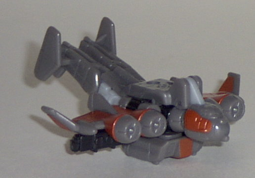 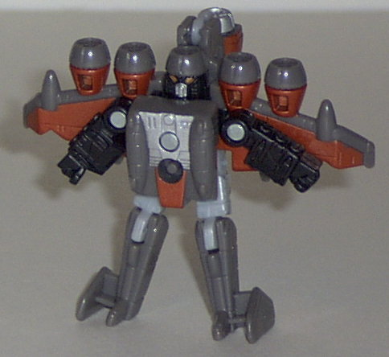 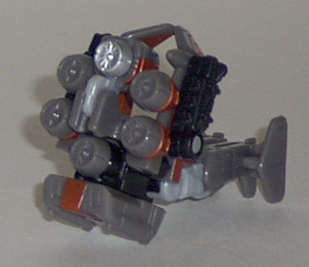
Difficulty of Transformation : Very Easy
Color Scheme : Gray, rusty red, and some light gray, black, and silver
Individual Rating : 6.3
Air
Military Team
Allegiance
: Minicon
Size
: Mini-Con (3-pack)
Team Gimmick
: Each has a third "weapon
mode"
Overall Rating
: 7.2
Gunbarrel
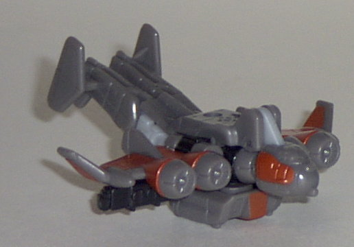
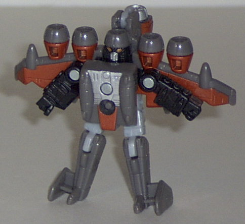
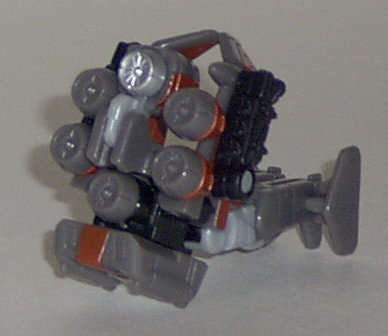
Difficulty of Transformation
: Very
Easy
Color Scheme
: Gray, rusty red, and
some light gray, black, and silver
Individual Rating
: 6.3
Vehicle mode is some
kind of aircraft. I say "some kind" because I'm not sure why the tail is
angled up at such an odd angle like that. Is it actually this way on a
certain type of aircraft? Certainly looks odd... Plus, the robot hands
are a bit obvious on the bottom side of hte wings. The paint and mold detailing
are superb, though. The Minicon symbol is on the top center of the aircraft,
and the Minicon port is on the bottom, slightly to the front of center.
Robot mode is pretty
nice, although it does have some oddities. I like the "squat gas mask"
look of the head, although I would have given him some antennae or something.
The chest is slightly oversized as well, and the hands are attached to
the underside of the wings, so you can only move them side to side. (His
other articulation is on the knees and hips, although this is a bit limited.)
To solve the hands problem, though, you CAN turn the wings inward, letting
him move his arms back and forth. I actually prefer it this way when I
play with him.
Weapon mode is pretty
cool, except for that big oddly-angled tail coming off the back of it.
It's supposed to be some sort of rotary gun platform, and looks quite the
part if you exclude the trail. He especially looks awesome powerlinked
to a larger Transformer. The hands stick out a bit, but they integrate
with the rest of the mode a bit better than they did in vehicle mode.
If it wasn't for his
weapon mode, Gunbarrel would be a pretty mediocre and boring Minicon. As
it is, he's still a bit mediocre, but his weapon mode gives him a little
extra kick. He's the weakest of the Air Military Team, in my opinion.
Terradive
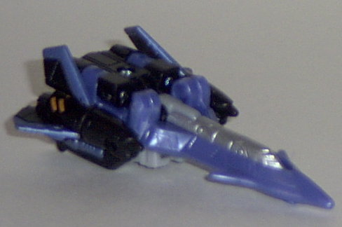
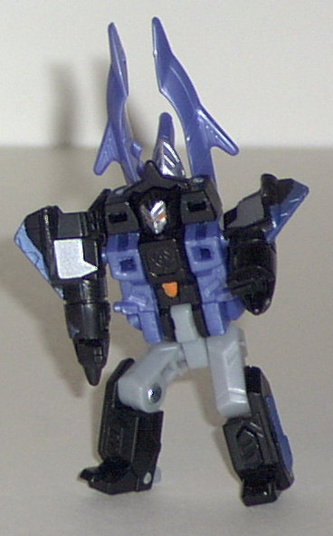
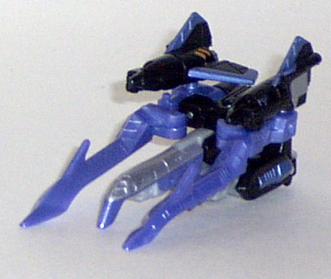
Difficulty of Transformation
: Easy
Color Scheme
: Black, moderately
light milky blue, light gray, and some silver and bright orange
Individual Rating
: 8.1
Vehicle mode is a stealth
jet. This mode is very nice, with few extras. The robot legs on the bottom
may stick out a little to some, but it blends in with the overall shape
of the vehicle mode very well, I think. The robot hands detailing on the
sides of the plane can also stick out a bit if you know where to look.
The rest of this mode, is perfect, though- wonderful color scheme, excellent
detailling, and nice proportions. He even has a little fold-out landing
gear! Terradive actually has two Minicon ports- both on the undersides
of the plane mode, to the rear. They're on the bottom of each of his robot
legs.
Robot mode is really,
really nifty, although some of the parts that comprise the front of the
plane mode tend to pop off too easily. Nice color variations, and a downright
eeevil-looking face. The nosecone with comes off his back actually complements
this mode quite a bit instead of hindering it, and makes Terradive look
all the more evil. His articulation is also decent for a Minicon- he can
move at the shoulders, hips, and knees. His Minicon symbol is visible in
this mode as well- it's smack dab in the center of his chest.
The weapon mode is a
jabbing spear-like protrusion. It looks pretty cool when mounted on the
back of a forearm of a larger Transformer, though. On your average Minicon
port, though, it looks odd. Again, though, some of the nosecone parts can
come off too easily.
Terradive is hecka cool.
Not my favorite Minicon on the Air Military Team, but one of the best Minicons
of them all.
Thunderwing
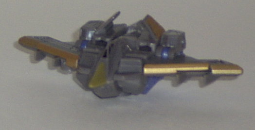
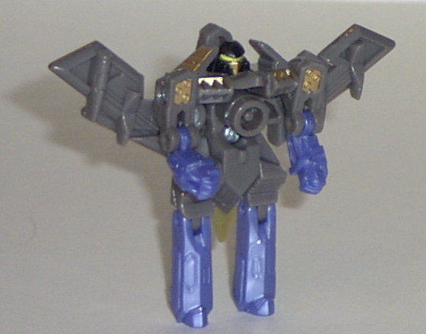
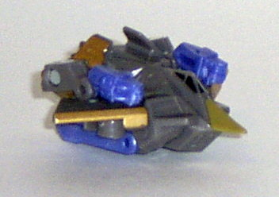
Difficulty of Transformation
: Very
Easy
Color Scheme
: Gray, dull gold, moderately
light milky blue, and some black
Individual Rating
: 7.1
Vehicle mode is a stealth
bomber. This mode is very nice, and although it's a tad chunky in the middle,
it's otherwise fine. Excellent proportions and detailing, just like the
other Air Military Minicons. His nose cone is a tad too beak-like, though.
His Minicon symbol in this mode is on the end of his left wing, and the
Minicon port is on the bottom center of the mode.
Thunderwing's robot
mode has some good points, it looks a little incomplete. I mainly say this
because his chest is just a Minicon port, with a rather noticeable gap
between the bottom of that and the start of the legs. There also isn't
that much paint detailing visible in this mode, either, and the upturned,
long wings coming off from below his shoulders look a tad odd. His robot
face looks really cool, though, what with the slanted eyes and the faceplate.
He also has good articulation for a Minicon- he can move back-and-forth
at the shoulders, elbows, knees, and hips.
You may have to stare
at Thunderwing's weapon mode for a couple of seconds to realize what it
is, but once you do, you realize how ingenious it is. It's a ninja star,
and although it doesn't look like much from the side, if you look at it
from a top view (which, once he's mounted on a larger Transformer, you're
going to see him from anyways), the shape fits exactly. The hands may stick
out a little bit in this mode, but they're small detractors. What's more,
his entire body can rotate AROUND his Minicon port- allowing you to spin
him in weapon mode when he's attached to a larger Transformer for sawblade
action! Awesome!
Thunderwing's robot
mode is a bit mediocre, but his vehicle mode is pretty neat, and his weapon
mode is ingenious. Definitely an above-average Minicon, at the least.
The Air Military Team is probably my second- or third- favorite Minicon team out of them all. Although Gunbarrel and Thunderwing could use a little sprucin' up in their robot modes, all of their weapon modes are great, and Terradive is just an awesome toy all around. Thunderwing's vehicle mode is also great, and Gunbarrel's vehicle mode is okay. Highly recommended.
Review by Beastbot